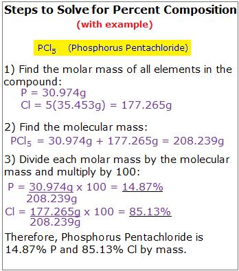
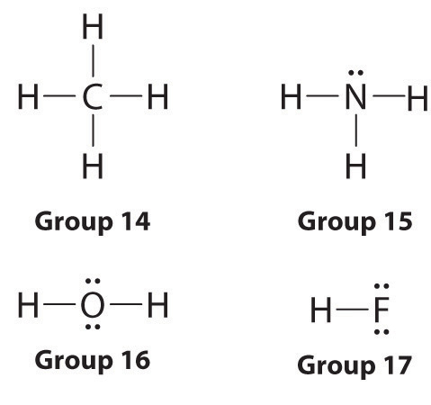
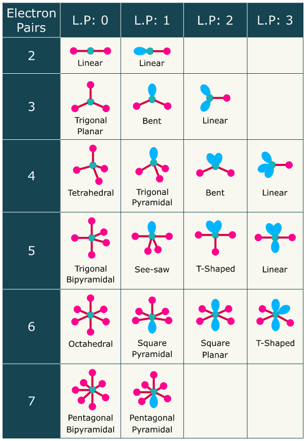

✅ for completed
Topic 1
Essential Chemistry Skills
- Represent ions using formulae which include the number of constituent atoms and the charge on the ion. 1.
- Recognise, name and write the formulae of a range of ions (see Appendix 1).
- Determine the formulae of ionic compounds from the formulae of their constituent ions (see Appendix 1).
- Use molecular formulae to represent the number and type of atoms in a covalent molecule, and recognise some common covalent molecular substances (See Appendix 1).
- Write and use balanced chemical equations to represent chemical reactions.
- Define the mole as a precisely defined quantity of matter, equal to Avogadro’s number of particles.
- Use Avogadro’s number (see Data Booklet) to convert between number of particles and moles, and vice versa.
- Use the relationship between mass, molar mass and number of moles to convert between moles and mass, and vice versa
Atomic Structure - Development of the Atomic Model
- Construct a timeline of the development of the atomic model. (SHE)
- Describe and explain the role of the following scientists in the development of our atomic model: (SHE)
- Dalton
- Thomson
- Rutherford
- Bohr
- Chadwick
- Explain how developments in technology have contributed to our understanding of the model of the atom. (SHE) 12. Research and communicate scientific ideas effectively in the format of a scientific report, including correct referencing of sources. (SIS) 13. Describe the structure of the atom, including the locations of sub-atomic particles, holding the electrons to the nucleus.
- Describe the properties of protons, neutrons and electrons, including relative mass and charge.
- Use the periodic table to give an element’s symbol, atomic number, relative atomic mass, number of protons, neutrons and electrons (neutral atom or monatomic ion).
- Define what isotopes are, and describe the similarities and differences between isotopes of the same element.
- Define what the relative atomic mass of an element is, and explain how this is different from mass number.
- Describe how mass spectrometry can be used to establish the isotopic composition of an element.
- Analyse mass spectra of elements to calculate the isotopic composition.
- Calculate relative atomic mass from isotopic composition data.
- Define the mole as a precisely defined quantity of matter, equal to Avogadro’s number of particles.
- Use Avogadro’s number (see Data Booklet) to convert between number of particles and moles, and vice versa.
- Use the relationship between mass, molar mass and number of moles to convert between moles and mass, and vice versa.
Electron Configuration
- Explain that electrons exist in distinct energy levels.
- Use the energy level / shell model to write electron configurations for the first 20 elements, (eg: 2,8,8).
- Explain that atomic orbitals have different energy levels, and occupy different regions of space.
- Use the subshell (s/p/d/f) configurations to write electron arrangements for the first 20 elements (s & p only).
- Explain how the transition of electrons between energy levels can produce atomic absorption and emission line spectra.
- Describe and explain how flame tests and atomic absorption spectroscopy (AAS) can be used to identify elements.
- Conduct experimental work safely, competently and methodically, including flame tests. (SIS)
- Identify the valence electrons of an atom, and explain why these are the electrons involved in bonding and chemical reactions.
- Explain how the stability of the valence electron shell determines the reactivity of an element.
The Periodic Table
- Explain how the arrangement of the periodic table is based on the atomic number of the elements.
- Describe the relationship between position on the periodic table and electronic arrangement, including the relationship between group and number of valence electrons, and between period and number of occupied electron shells.
- Use electron configuration to identify an atom or ion and its location in the periodic table, and infer its chemical properties.
- Describe and explain the relationship between electronic structure and chemical properties and reactivity, for elements in groups 1, 2, 13 – 18.
- Explain the trends in reactivity for groups 1, 2, 16 & 17.
- Define the terms ionisation energy and electronegativity.
- what is ionisation energy
- ionisation energy is the energy required to remove one mole of electrons from one mole of atom in its gaseous state
- what is electronegativity
- ability of an atom to attract bonding pair of electrons in covalent bonds
- what is ionisation energy
- Describe and explain the trends in first ionisation energy, atomic radius, valency & electronegativity in the periodic table, with reference to groups 1, 2, 13 – 18 and periods 1 – 3.
- first ionisation energy trend
- increases across period
- decreases down groups
- why?
- across periods, more protons = more electrostatic forces of attraction (?)
- down groups, larger atomic radius = larger distance from outermost energy level to nucleus = weaker electrostatic forces of attraction (?)
- atomic radius trend
- decreases across periods
- increase down groups
- why?
- across periods, there is larger electrostatic forces of attraction because of increased nuclear charge, so atomic radius decreases as the outermost energy level is pulled in more.
- across groups, there are more energy levels, so the distance between outermost valence shell and nucleus is further, increasing the radius.
- valency trend
- (?)
- electronegativity trend
- down a group, it decreases
- across a period it increases,
- electron shielding
- blocking of the outer most energy level’s electron’s attraction to the nucleus, due to the presence of inner-shell electrons.
- since electrons repel other electrons.
- across period, strength of shielding stays relatively the same
- down a group, strength of shielding increases
- first ionisation energy trend
Topic 2: BONDING, INTERMOLECULAR FORCES, AND PROPERTIES
Introduction to Bonding
- Describe the valency of an atom as a measure of the atom’s bonding capacity, and use the periodic table to establish the valency of an atom for periods 1 to 3.
- p1: valency of +1
- p2: valency of +2
- p3: valency of +3
- idk what this objective means
- Explain how the ability of atoms to form chemical bonds is related to its electronic structure, particularly the stability of the valence shell.
- why do atoms form chemical bonds?
- to achieve stability where a valence shell is full.
- what are the 4 structures of chemical arrangements?
- giant metallic
- what is giant metallic structure?
- lattice consists of regularly arranged ions (not atoms), surrounded by a sea of delocalised electrons.
- the outer electrons are free to move around the positive metal ions formed
- what is giant metallic structure?
- giant ionic
- strong electrostatic forces of attraction between oppositely charged ions.
- giant molecular
- what is giant molecular structure?
- large number of atoms are joined by covalent bonds
- what is giant molecular structure?
- simple molecular
- what is a simple molecular structure?
- contains only a few atoms held together by covalent bonds. ie CO2
- there exists weaker intermolecular forces between atoms.
- what is a simple molecular structure?
- giant metallic
- why do atoms form chemical bonds?
- Explain how electrostatic attraction between oppositely charges species / regions leads to chemical bonds.
- two oppositely charged species leads to an electrostatic attraction as the metal loses electrons to become a positive ion, and the non-metal gain the electrons lost by the metal to become a negative ion.
- Use the periodic table to establish the type of bonding present in elements and compounds.
- what are the types of bonding?
- metallic: metal + metal
- ionic: non metal + metal
- covalent: non metal + non metal
- what are the types of bonding?
- Explain why the type of bonding present in a substance defines the physical properties of that substance, including melting and boiling points, conductivity of heat and electricity, and hardness.
- covalent network:
- very high melting boiling point
- mostly not conductive
- mostly hard and brittle
- ionic
- high melting boiling point
- conductors (in molten or dissolved in water, otherwise non-conductors)
- hard and brittle
- metallic
- mostly moderate to high melting point
- conductive
- malleable and ductile
- covalent molecular
- low melting boiling point
- non conductors
- soft
- covalent network:
Ionic Bonding
- Define ions as atoms or groups of atoms that are electrically charged due to loss or gain of electrons.
- ion is an atom or a group of atoms that has are electrically charged.
- this is due to a loss or gain of electrons.
- atoms/groups of atoms which have lost an electron is called a cation (positively charged ion)
- atoms/groups of atoms which have gained an electron is called an anion (negatively charged ion)
- ion is an atom or a group of atoms that has are electrically charged.
- Describe and explain how ions are held together to form an ionic lattice.
- due to strong electrostatic attraction between neighbouring positive and negative ions.
- any given positive ion is attracted to all surrounding negative ions and vice versa.
- there also exists repulsive forces, but they are much weaker as the like (same force) charged ions are further apart in the lattice (diagonally arranged) than the adjacent unlike charged ions.
- electrostatic force reduce considerable as the distance between ions increases.
- Use understanding of ionic bonding to explain the physical properties of ionic compounds, including:
- High melting and boiling points
- ionic bonds are strong electrostatic attractive forces between ions. These strong attractive forces extend throughout the ionic lattice keeping individual ions in fixed positions.
- Thus a high temperature, ie high particle kinetic energy, is needed to disrupt (melt) the ionic lattice.
- Hardness and brittleness
- if a large force is applied to the ionic lattice it will cause layers of ions to move.
- when this happens, like charged ions will be forced to align alongside one another, ie no longer diagonally aligned.
- this means like charges will be closer together than unlike charges.
- consequently repulsive forces will exceed attractive forces and the lattice will break apart rather than simply dent or bend.
- Conductivity in solid, liquid and aqueous states.
- solid - poor conductors
- in an ionic solid the ions are tightly held in fixed positions. Thus they are unable to move and carry charge.
- an absence of mobile charged particles means ionic solids are not-conductors of electricity.
- molten (liquid) - good conductors
- in molten phase, ions are mobile and free to move and carry charge throughout the ionic liquid.
- since both positive and negative ions carry charge, positive ions move towards the negative electrode while negative ions move towards the positive electrode.
- aqueous - good conductors
- individual ions from the ionic solid are mobile and free to move independently of one another.
- their mobility and charge enable them to conduct an electric current through the ionic solution.
- the current consists of positive ions moving toward the negative electrode and negative ions moving towards the positive electrode.
- solid - poor conductors
- High melting and boiling points
- Calculate percentage composition of an ionic compound from the relative atomic masses of the constituent species.
- 
- Define and describe the difference between anhydrous and hydrated salts, and explain the role of water of crystallisation.
- what is anhydrous salt?
- a compound in which all water is removed.
- what is a hydrated salt?
- a salt molecule that is attached to a certain number of water molecules.
- what is anhydrous salt?
- Calculate the formula of an ionic compound from empirical data, including the formula of a hydrated salt.
- how do you use the handy table?
-
mass 3.333 3.24 Mr 110.98 18.016 moles 0.03003 0.17984 ratio 1 5.986
-
- how do you use the handy table?
- Perform stoichiometric calculations in order to establish percentage composition and empirical formula of ionic compounds.
- real
Metallic Bonding
- Describe how metallic bonding holds metal atoms together, in a lattice of positively charged ions surrounded by delocalised electrons.
- whats in a metallic lattice?
- atoms achieve noble gas electron configuration by releasing their valence electrons. the positive metal ions occupy fixed positions within a 3d lattice, whilst valence electrons are free to move at random amongst lattice of metal ions.
- what is the electrons called
- delocalised
- what are the electrons described to be
- mobile sea of electrons
- whats in a metallic lattice?
- Explain the physical properties of metals, including:
- a. malleability and ductility
- why is metallic bonds malleable and ductile?
- bonding is non-directional, so it means that metal atoms can move in relation to each other without breaking bonds between them and the sea of electrons.
- when a metal changes shape, ie to be dented, bent or stretched, it will not break.
- why is metallic bonds malleable and ductile?
- b. thermal and electrical conductivity
- why are metals good at conducting electricity?
- because its electrons are delocalised.
- if voltage is applied, electrons move towards the positive terminal of power supply.
- whys it good at conducting heat?
- delocalised electrons are mobile so can carry heat (as kinetic energy)
- why are metals good at conducting electricity?
- c. generally high melting and boiling points.
- strong attractive forces between the metal ions and sea of electrons hold the metallic lattice together.
- a. malleability and ductility
Covalent Bonding
- Describe a covalent bond as a shared pair of electrons, resulting in electrostatic attraction between positive nuclei of the atoms and the shared electron pair.
- how to describe covalent bond?
- covalent bonds are two non metallic atoms which share electrons, so the electrostatic attraction exists between the nucleus and their individual electrons and the electrons they share. (?)
- how to describe covalent bond?
- Draw Lewis structures for covalent molecules, showing both bonding pairs and lone pairs of electrons.
- how to draw lewis structure diagram
- 
- Use the valence shell electron pair repulsion (VSEPR) theory along with Lewis structures to explain, predict and draw the shapes of molecules and polyatomic ions.
- 
- Explain the physical properties of covalent molecular substances, including:
- a. low melting and boiling points
- why does covalent molecular substances have low melting and boiling points?
- only the weak intermolecular forces of the bond needs to be overcome.
- therefore, it is easily disrupted by heat energy.
- (covalent bonds are occurring within the atoms, not the molecules, therefore there are no strong covalent bonds holding atoms together)
- why does covalent molecular substances have low melting and boiling points?
- b. non-conductivity
- why is covalent molecular substances non conductive?
- protons and electrons occupy fixed positions, so electrons are not delocalised and free moving.
- in other words, the electrons are localised.
- why is covalent molecular substances non conductive?
- c. softness and brittleness.
- why it soft and brittle?
- there are no covalent bonds between atoms, only within atoms.
- therefore, only weak intermolecular forces (dispersion) needs to be overcome to break apart the covalent molecular structure.
- so molecules are easily separated from one another.
- why it soft and brittle?
- a. low melting and boiling points
- Recognise some common covalent network substances, including diamond, graphite and silicon dioxide.
- What has a higher boiling point: covalent network substances or covalent molecular substances in the same period.
- Covalent network substances because it is purely covalent bonds.
- What has a higher boiling point: covalent network substances or covalent molecular substances in the same period.
- Describe the range of allotropes of elemental carbon (diamond, graphite and fullerenes), and explain why they have significantly different physical and chemical properties.
- diamond:
- 4 covalent bonds
- graphite:
- 3 covalent bonds, stacked on each other and attracted together with dispersion forces
- fullernes:
- buckyball, 60 carbons in the shape of a ball.
- diamond:
- Explain the physical properties of covalent network substances, including:
- a. high melting and boiling points
- b. hardness and brittleness
- strong covalent bonds occur so it is very hard.
- however, it is brittle, because distortion causes the structure to be damaged, and the protons will repel other protons,
- c. thermal conductivity
- does not conduct heat, because electrons are in fixed positions
- d. electrical conductivity
- does not conduct electric, because electrons are in fixed positions
Nanomaterials
- Describe what nanomaterials are.
- nanomaterials are materials which have at least one dimension in the 1-100 nanometre range. (1 nanometre = metres).
- nanomaterials differ from the bulk of the material it is made from.
- State and describe how the properties of nanomaterials may differ from the properties of the bulk material, and give examples.
- why it differs?
- many are due to quantum effects that result from their small particle size
- eg zinc oxide and titanium are white opaque solids with good UV protection. in macro particle form, it leaves a layer on the skin.
- so nano particles become invisible on the skin whilst protecting against UV exposure.
- why it differs?
-
Identify uses of nanomaterials and suggest advantages and disadvantages to their use.
- Describe the potential health risks associated with the use of nanoparticles. (SHE)
- hazardous when inhaled for workers exposed to some airborne nanoparticles.
- Describe and explain examples of environmental concerns associated with the use of nanomaterials. (SHE)
- not much is known about environment
- Provide a balanced discussion of the advantages and disadvantages of nanomaterials. (SHE)
Intermolecular Forces
- Describe the difference between intramolecular bonding and intermolecular forces.
- Two bondings exist in a molecular substance.
- Intramolecular forces are the strongest of the two bonds.
- These are the bonds that exists within molecules between atoms.
- essentially keeps the atoms clustered together within a molecule.
- thee covalent bonds are not affected during melting, boiling or evaporating.
- only chemical changes affect these bonds.
- Intermolecular forces are much weaker.
- occur within molecules, bonding between molecules
- much easier to overcome when a molecular substance melts, boils, or evaporates.
- three types of intermolecular forces.
- dispersion
- occur in all molecular materials
- however, it is the only intermolecular forces of attraction present in non-polar substances like hydrocarbons and gases like N2, O2, and CO2
- generally increases in strength with number of electrons.
- clearly seen in non-polar, alkane family of compounds
- boiling point increases with increasing molar mass.
- because of this property, it is often stated that dispersion forces increase with molar mass / molecular size
- boiling point increases with increasing molar mass.
- clearly seen in non-polar, alkane family of compounds
- dispersion forces are stronger in molecules with shapes allowing maximum surface contact between molecules, ie linear in preference to branched or spherical shapes.
- thus linear molecules will have stronger dispersion forces and hence higher melting points and boiling points than spherical or branched shapes of similar mass.
- dispersion force arise when random motion of electrons produce short lived temporary dipoles.
- this makes non-polar molecules temporarily polar.
- cause nearby molecules to form similar temporary dipoles called induced dipoles.
- temporary dipole and induced dipole experience weak electrostatic known as dispersion forces.
- these forces constantly change due to temporary and induced dipoles being constantly formed, rapidly disappearing and then reforming elsewhere.
- dipole-dipole
- polar (see notes on polarity) molecules attract one another due to weak electrostatic attraction between their dipoles.
- dipole dipole forces increase melting points and boiling points.
- because of this, substances with polar molecules have slightly higher melting and boiling points than other substances of similar molecular size.
- generally substances with dipole-dipole forces, ie polar ones, will be soluble in one another but not soluble in non-polar substances, ie ones that can’t interact by dipole-dipole forces.
- this is why ethanol (polar) and water (polar) are soluble in one another, but mineral turpentine (non-polar) isn’t soluble in water.
- ability to dissolve ionic solutes.
- this property is due to attraction between the dipole of a polar molecule and an ion’s charge.
- called ion-dipole forces, not a type of intermolecular forces.
- hydrogen bond
- directional intermolecular forces. (? what does that mean)
- only exists between molecules having Hydrogen-F/O/N arrangement of atoms.
- due to electrostatic attraction between a lone pair of electrons (negative) of a F, O, or N atom and an H atom already covalently bonded to another F, O or N atom.
- sometimes described as extreme dipole-dipole attraction, where strong positive dipole of an H atom, ie one bonded to a highly electronegative F, O or N atom, is attracted to a strongly negatively dipole of another F, O or N atom.
- can be part of the same molecule or from different molecules.
- melting and boiling points are much higher for substances that can hydrogen bond than for those of similar molecular size that cannot hydrogen bond.
- solubility is also affected - substances experiencing hydrogen bonding between molecules are extremely soluble in other substances which are also hydrogen bonded.
- dispersion
- Compare the relative strength of ionic, covalent and metallic bonding with intermolecular forces.
- intermolecular forces are relatively weaker than intramolecular forces (ionic, covalent, metallic)
- Recognise that intermolecular forces are present in all substances, but are most significant in discussion of the properties of covalent molecular substances, due to the lack of any stronger interactions between molecules.
- why is intermolecular forces present in all substances?
- because of dispersion force
- it arises when the random motion of electrons within a molecule produce short lived temporary dipoles (makes non-polar molecules temporarily polar)
- polar molecules cause nearby molecules to form similar temporary dipoles called induced dipoles
- these dipoles create temporary and weak electrostatic attraction called dispersion.
- rapid state of change - constantly form, disappear and reform.
- why is intermolecular forces present in all substances?
- Describe how dispersion forces arise in all substances, and explain how molecular shape, and number of atoms affect the strength of dispersion forces.
- dispersion force arises in all substances because of random electron movements called temporary dipoles
- the temporary dipoles create induced dipoles, and they form temporary intermolecular forces called dispersion force.
- more electron and more surface contact has stronger dispersion forces.
- linear > branched or spherical shapes.
- Use knowledge of electronegativity to establish bond polarity.
- what is bond polarity?
- difference in electronegativity
- what is bond polarity?
-
Use understanding of molecular shape, bond polarity and symmetry to establish and explain the polarity of molecules.
- Describe how dipole-dipole forces arise, and explain how the relative size of a molecular dipole affects the strength of dipole-dipole forces.
- f
- Describe how hydrogen bonding arises, end explain why this special case of dipole-dipole bonding is so much stronger than other examples of dipole-dipole bonding.
- Draw diagrams to show how all types of intermolecular forces occur between neighbouring molecules.
- Compare the relative strength of the types of intermolecular forces.
- order in strength?
- strongest is ion-dipole
- hydrogen bonding
- dipole dipole
- dispersion forces
- order in strength?
- Use understanding of bond polarity, molecular shape and symmetry to establish the nature and strength of intermolecular forces present in a covalent molecular substance.
- Explain how the physical properties of covalent molecular substances depend on the strength of intermolecular forces, including:
- a. melting and boiling point
- trend?
- increases with intermolecular force strength
- why trend occur?
- because boiling point and melting point describes the energy required to break the IMF within molecules.
- what is the relation to different intermolecular forces?
- dispersion
- all molecules have dispersion forces, for molecules with only dispersion forces present, as dispersion forces increase in strength, so would boiling and melting point.
- dipole-dipole
- substances with dipole-dipole will have slightly higher melting + boiling point than substances of similar molecular size that can’t interact this way
- hydrogen bonding
- substances with hydrogen bonding will have high melting + boiling points than substances of similar molecular size (that can’t hydrogen bond)
- dispersion
- trend?
- b. vapour pressure
- what is vapour pressure?
- tendency of substance to evaporate
- what is vapour pressure measured in?
- kPa
- how does a substance evaporate?
- it must escape the intermolecular forces keeping it in liquid phase.
- what does this mean?
- thus weak intermolecular forces = easily evaporate = high vapour pressure
- trend with temperature and evaporation
- all substances have greater temp > increase vapour pressure.
- why is this the case?
- high temp = higher avg molecular kinetic energies
- what is vapour pressure?
- c. solubility in water and organic solvents
- usually strength of solubility needs to be comparable in strength for the solvent and the solute.
- this means that non-polar molecules, ie those with dispersion forces can be dissolved in other non-polar substances that also attract strongly by dispersion force.
- however these substances won’t be soluble in polar substances whose molecules attract strongly by dipole-dipole forces.
- also the case for hydrogen bonding, where compounds that attract strongly by hydrogen bonding are extremely soluble in other compounds that also attract strongly by hydrogen bonding.
- a. melting and boiling point
- Use understanding of intermolecular forces to explain patterns or relationships in melting and boiling points of covalent molecular substances.
- what is it’s melting and boiling point (relatively speaking?)?
- it is low to moderate
- why is that the case?
- only the weak intermolecular forces (dispersion) needs to be broken or overcome.
- weakly bonded lattice of molecules is easily disrupted by heat energy.
- strong covalent bonds are unaffected.
- what is it’s melting and boiling point (relatively speaking?)?
RELATED